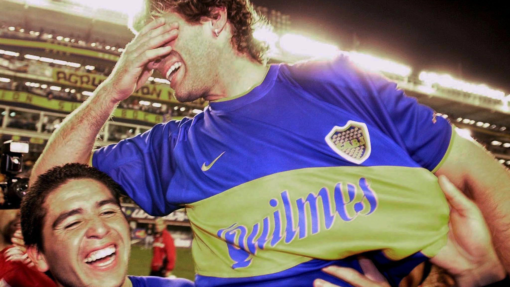

Una Dupla Soñada
Juan Roman y Martin coincidieron en Boca, desde el torneo Apertura del 97' hasta el torneo Apertura 00' y luego, por una segunda etapa, desde el torneo Clausura 07' hasta el torneo clausura del 11'.

Lograron una gran cantidad de titulos y records en el club. Juntos jugaron 188 partidos, de los cuales 103 fueron victorias del club de la Rivera.

Juntos ganaron dos Copa Libertadores, torneos locales y hasta vencieron al Real Madrid en la Copa Intercontinental en una noche épica para todos los Xeneizes. Escribieron las páginas doradas más importantes en la historia del club. Supieron levantar en conjunto cuatro torneos locales y cuatro internacionales.
Por otro lado, ambos tuvieron un paso por España y jugaron en contra. Roman para el Barcelona y Martin para el Villareal